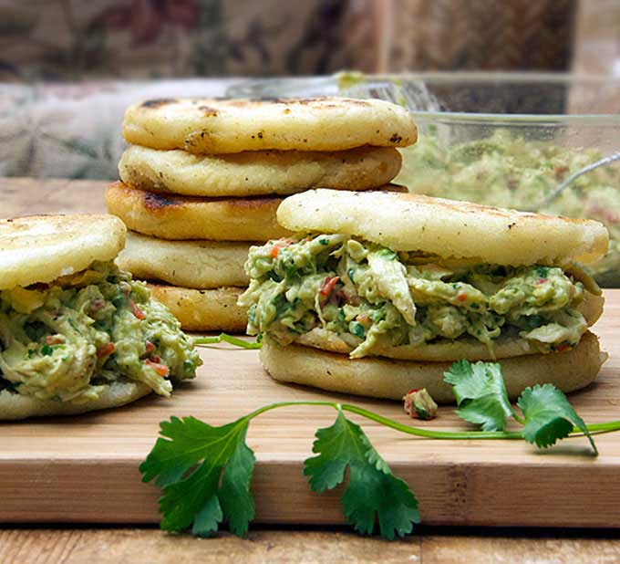

Reina Pepiada: Venezuelan Arepas With Chicken And Avocado

So simple yet so yummy
Riena pepiada is a classic staple in Venezuela. It is a beautifal combonation of crispy crunchy arepas, and a decadent filling of avocado and chicken mixed together.
When all of these are combined together it makes a flavor packed hand held meal juse waiting to be devoured.
Arepas are corn meal also known as masa patties. They are deepfried or grilled on a cooktop. Once cooked they are split open and jam packed with anything you want to stuff them with.
You can fill them with anything from eggs, to shredded beef, black beans, cheese, or all of what I mentioned could be combined into an arepa.
They have a crunchy exterior and a fluffy yet doughy interior. Its up to you though, some people scrap out the masa filling to make more room for whatever it is you want to put inside of it.
The recipe we are going to be making today is the classic chicken and avocado. It is a beautifal blend of shredded chicken mixed with fresh avocado, mayonnaise, onion, bell pepper, garlic, and cilantro.
It's basically a souped up chicken salad that has every element needed to compliment the flavor of the arepas. The two combined is one of my personal favorite fillings to have with an arepa.
But enough teasing and filling your mind and senses with anticipation. Lets get at it making everything today!
Chicken & avocado salad ingredients
- 1lbs shredded chicken (about 3 cups)
- 2 Avocados, peeled, pitted, roughly mashed
- 2-3 Tablespoons of mayonnaise
- 1/2 Red bell pepper, diced
- 3 Tablespoons finely chopped white onion
- 3 Tablespoons finely chopped cilantro
- 2 Teaspoons finely minced garlic (about 2 cloves)
- 1/2 Teaspoon salt or more, to taste
Arepa ingredients
- 3 Cups precooked white corn flour (P.A.N or Masarepa)
- 3 1/4 Cups of warm water
- 1 Teaspoon salt
- Oil
- Step One: Poach the chicken If not using canned chicken, boil chicken in pot of water for 10-14 minutes.
Making sure there is not any pink left. once cooked, pull out of the water into a bowl and begin shredding the chicken.
once shredded leave in bowl and set aside and continue to the next step.
- Step Two: Craft the chicken avocado salad In a seperate medium sized bowl, mix the avocado the mayonnaise and lime juice.
From there we will add the rest of the ingridients: chicken, red pepper, onion, cilantro, and garlic, and salting to taste.
Mix well and store in the fridge until you are ready to eat. Can be made a few hours ahead and left in the fridge.
Will be good the following day, just not as colorful as the prior day.
- Step Three: Craft the arepas Preheat oven to 350°F. Pour the warm watet into a large bowl. Stir in salt to dissolve.
Pour in the corn flour (masa) and immediately start kneading the mixture with your hands. Be sure to squeeze and break apart any lumps.
once combined let sit for 3-5 minutes. Divide into 8 pieces. To shape arepas roll out the dough into a ball and then pat it, in between your hands,
into a disc shape. The discs should be about 3-4 inches in diameter and about 1/2 inch thick. Place on the baking sheet as you form them.
- Step Four: Sear arepas in a pan Lightly oil a large non-stick pan. Turn the heat to medium and get the skillet nice and hot.
Brown the arepas in batches, about 4 minutes per side, until they are seared with some brown areas on both sides. Set them back on the baking sheet as you go.
- Step Five: Finish the arepas in the oven When all the arepas are seared, place them all on the wire rack in the center of the oven.
Cook for 15-20 minutes, until they are puffed up a bit. They will have a nice crispy outer skin even when they puff up. From there just cut them open, fill them up and enjoy!